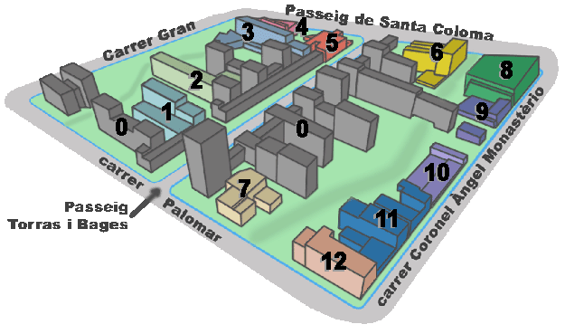

|
terrenys
públics: parc, equipaments i pisos públics
SI TOTS VOLEM PODREM |
 |
|

|
||
|
|
|
0
|
habitatges només 50% públics |
1
|
dotacionals gent major |
2
|
residència gent major/discapacit. |
3
|
dotacionals
joves biblioteca |
4
|
alberg joves |
5
|
comissaria mossos |
6
|
residència estudiants |
|
8
|
poliesportiu |
9
|
C.E.I.P. |
10
|
dotacionals gent major |
11
|
C.A.P.
i centre sociosanitari |
12
|
O.N.G. |
7
|
Centre Cívic | ||
NO ENS ROBAREU LES CASERNES l'últim terreny públic de Sant Andreu de Palomar
Tornar